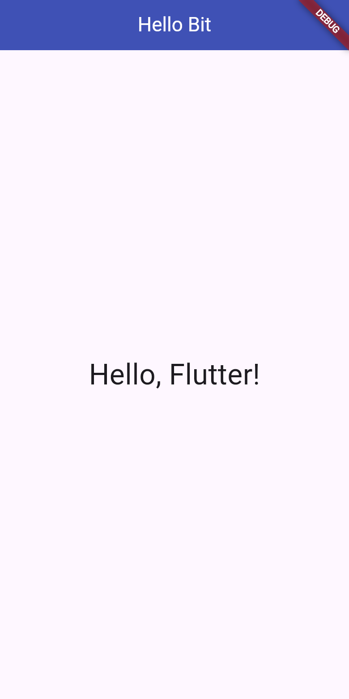
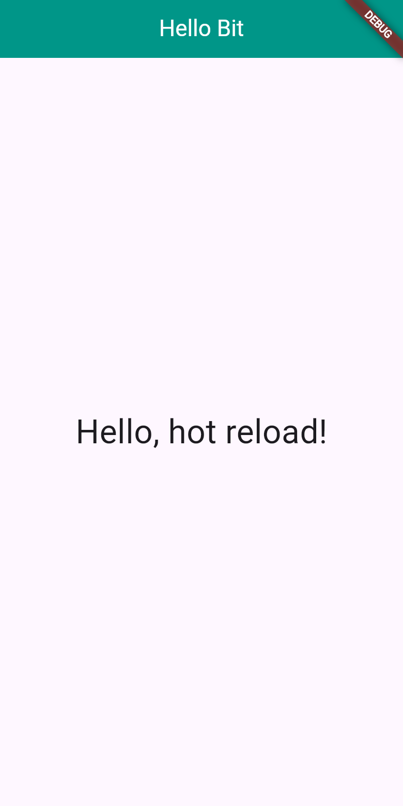
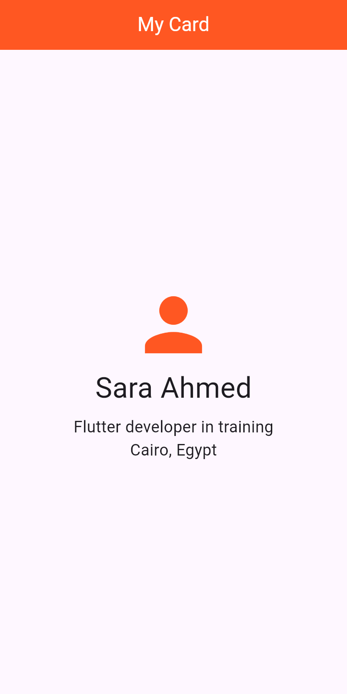

Chapter 1
Setting Up Flutter
In this chapter you will learn to
- explain what Flutter is, and how one codebase becomes an Android app and an iPhone app
- install Flutter and the tools around it, and read what
flutter doctortells you - create a project and know what each of its folders is for
- run an app, and change it while it runs with hot reload
- check your work the way professionals do: tests, the analyzer and the formatter
By the end of this chapter you will have a real app running on a phone, or on an emulator that behaves like one, and you will have changed it while it was running and watched the change appear in a fraction of a second. Most of the chapter is setting up: it is the least exciting part of the book, and the most important. A good setup, checked once, saves you hours of confusing errors later.
Bit
Hello again! In the earlier books I lived in a browser. Now I want to live in your pocket. Install the tools with me, one step at a time, and by the end of the chapter I will be waving at you from a phone screen.
1.1 What Flutter is
Flutter is a free toolkit, made by Google, for building apps. You write your app once, in a language called Dart, and Flutter turns it into an Android app, an iPhone app, a website, or a desktop program for Windows, macOS and Linux. Each of these is called a platform. This book focuses on the two that matter most for most people: Android and iOS, the system of the iPhone.
Before toolkits like Flutter, a company that wanted an app on both kinds of phone usually built it twice: once in Kotlin or Java for Android, and once in Swift for iOS, often by two different teams. Every feature was written twice, tested twice, and had its bugs fixed twice. Flutter lets one developer, or one team, write it once.
Flutter has one unusual idea that explains much of what you will see in this book: it draws every pixel of the app itself. Many other toolkits ask the phone to draw its own buttons and text boxes, so the app looks slightly different on each phone. Flutter brings its own drawing engine instead, the same one on every platform, so a button looks and behaves exactly as you designed it, everywhere. That is also why a screenshot of a Flutter app running in a browser looks exactly like the same app on a phone.
The language, Dart, was also made by Google. It looks familiar if you know JavaScript, but it checks your types before the program runs, as you will see in Chapter 2. You do not install Dart separately: it comes inside Flutter.
1.2 What you need
Building mobile apps needs more tools than building web pages, because each phone system comes with its own tools from its own company. Here is the whole list. You do not need all of it today; the next sections install it in order.
| Tool | What it is for | Needed on |
|---|---|---|
| Flutter SDK | Flutter itself, with Dart inside it | Every computer |
| Git | Flutter uses it to update itself, and you use it for your code (Book 1) | Every computer |
| Visual Studio Code | The editor, with the Flutter extension | Every computer |
| Android Studio | The Android SDK (Google’s tools for Android) and the Android emulator | Every computer |
| Xcode | Apple’s tools for iOS, and the iPhone simulator | Only a Mac |
An SDK, a software development kit, is a folder of tools for building software for one system. An emulator is a program that pretends to be a phone, on your computer screen, so you can run your app without a real phone. Apple calls its version a simulator.
1.3 Installing the Flutter SDK
Installing Flutter means three things: downloading it, putting it in a folder, and telling your terminal where to find it.
- Open
docs.flutter.dev, choose Get started, then your system (Windows, macOS or Linux). Follow the instructions for Android as your first target. Install Git first if the page asks for it. - Download the Flutter SDK, a large zip file, and unzip it into a folder whose path has no spaces and does not need administrator rights. Good choices are
C:\dev\flutteron Windows and~/development/flutteron macOS and Linux. - Add the
binfolder inside it (for exampleC:\dev\flutter\bin) to your PATH, the list of folders where the terminal looks for commands. The page shows how for your system. - Close every terminal and open a new one. Then ask Flutter who it is:
# Which Flutter, and which Dart inside it? $ flutter --version Flutter 3.50.1 • channel stable • https://github.com/flutter/flutter.git Framework • revision ae9b586f34 (3 days ago) • 2026-11-18 17:01:07 -0800 Engine • hash 51379e6df48ea8ee7205623b90fe66491cad8df3 (revision 4d35714800) (3 days ago) • 2026-11-18 01:50:07.000Z Tools • Dart 3.14.0 • DevTools 2.61.0
Four lines, and each one means something. The first is the version of Flutter, 3.50.1, from the stable channel: the releases that are tested and safe for real apps. The next two say exactly which code of the framework and the engine you have, with the dates they were made. The last line is the most interesting for the next chapter: Flutter 3.50.1 brings Dart 3.14.0 with it, and DevTools, a set of tools for looking inside a running app that you will meet later.
1.4 Asking the doctor
Flutter needs the other tools in the table, and it can check them for you. The command flutter doctor examines your computer and writes a report, one line per tool. Here is the real report from the computer this book was built on, a Linux machine with no Android tools installed yet:
# Is everything ready? $ flutter doctor Doctor summary (to see all details, run flutter doctor -v): [✓] Flutter (Channel stable, 3.50.1, on Ubuntu 24.04.5 LTS 6.18.44-fc-v726, locale C.UTF-8) [✗] Android toolchain - develop for Android devices ✗ Unable to locate Android SDK. Install Android Studio from: https://developer.android.com/studio/index.html On first launch it will assist you in installing the Android SDK components. (or visit https://flutter.dev/to/linux-android-setup for detailed instructions). If the Android SDK has been installed to a custom location, please use `flutter config --android-sdk` to update to that location. [✓] Chrome - develop for the web [✗] Linux toolchain - develop for Linux desktop ✗ GTK 3.0 development libraries are required for Linux development. They are likely available from your distribution (e.g.: apt install libgtk-3-dev) ! Unable to access driver information using 'eglinfo'. It is likely available from your distribution (e.g.: apt install mesa-utils) [✓] Connected device (2 available) [✓] Network resources ! Doctor found issues in 2 categories.
Read the report like a checklist. A [✓] means ready. A [✗] means missing, and a ! is a warning: something works only partly. Under every problem, the doctor tells you what to do, often with the exact command or link. This machine has two problems:
- Android toolchain: no Android SDK was found. This one matters: without it, there is no Android app. The doctor says how to fix it: install Android Studio.
- Linux toolchain: some libraries for building Linux desktop programs are missing. This book does not build desktop programs, so this line can be ignored.
Your report will look a little different: on Windows you will see a line for Visual Studio (for Windows desktop programs, which you can also ignore), and on a Mac a line for Xcode.
Installing the Android tools
- Download Android Studio from
developer.android.com/studioand install it. Open it once, and let its setup wizard install the Android SDK. - In Android Studio, open the SDK Manager, and on the SDK Tools tab tick Android SDK Command-line Tools, then apply.
- Accept Google’s licences for the SDK, from the terminal:
flutter doctor --android-licenses. Read each licence and answery. - Create an emulator: in Android Studio, open the Device Manager, add a virtual device, choose a recent phone (a Pixel is a good choice) and a recent system image, and finish.
- Run
flutter doctoragain. The Android line should now show[✓].
On a Mac: the iOS tools
Install Xcode from the Mac App Store; it is large, so give it time. Open it once to finish its setup, then run flutter doctor and do exactly what the Xcode section of the report says, one line at a time. The report names the commands for your version of Xcode, which is safer than any list printed in a book.
Bit
Installing tools is the part of programming where everyone gets stuck at least once. When you do, copy the exact error message into a search engine. Somebody had the same problem last week, and somebody else answered them.
1.5 Your first project
One command creates a complete app, ready to run. Open a terminal in the folder where you keep your projects:
# A new project called hello_bit $ flutter create hello_bit Creating project hello_bit... Got dependencies in `hello_bit`. Wrote 131 files. All done! You can find general documentation for Flutter at: https://docs.flutter.dev/ Detailed API documentation is available at: https://api.flutter.dev/ If you prefer video documentation, consider: https://www.youtube.com/c/flutterdev In order to run your application, type: $ cd hello_bit $ flutter run Your application code is in hello_bit/lib/main.dart.
Flutter wrote 131 files, then downloaded the packages the app needs (“Got dependencies”). The project’s name, hello_bit, follows Dart’s rule for names of projects and files: only lower-case letters, digits and underscores. A name like HelloBit or hello-bit is refused.
Open the folder in VS Code (File, Open Folder). This is what is inside:
hello_bit/ .gitignore .metadata README.md analysis_options.yaml android/ hello_bit.iml ios/ lib/ linux/ macos/ pubspec.lock pubspec.yaml test/ web/ windows/
| Name | What it is | How often you touch it |
|---|---|---|
lib/ | Your Dart code. The app starts in lib/main.dart | All the time |
test/ | Tests for your code | All the time |
pubspec.yaml | The project’s name, version, and the packages it uses | Often |
android/, ios/ | Small native projects that wrap your app for each phone system: its icon, its permissions, its name in the store | Sometimes |
web/, linux/, macos/, windows/ | The same, for the web and for desktops | Rarely |
analysis_options.yaml | The rules the analyzer checks your code against | Rarely |
pubspec.lock | The exact versions of every package that was downloaded. Flutter writes it; you commit it | Never by hand |
README.md, .gitignore, .metadata, hello_bit.iml | A description, the files Git should ignore, and notes for Flutter and for editors | Rarely |
Open pubspec.yaml. Among many helpful comments, the part that matters today is the list of dependencies, the packages your app uses:
dependencies:
flutter:
sdk: flutter
material_ui: ^1.1.0
# The following adds the Cupertino Icons font to your application.
# Use with the CupertinoIcons class for iOS style icons.
cupertino_icons: ^1.0.8A package is a library of code that someone published for others to use, on the website pub.dev. Your app uses three. flutter is Flutter itself. material_ui holds the Material widgets: buttons, bars, cards and text fields in the style of Google’s Material Design, which this book uses everywhere. cupertino_icons holds icons in Apple’s style. The ^1.1.0 means “version 1.1.0 or any later version that promises to stay compatible with it”.
1.6 Reading main.dart
The new project is a small counter app: a number in the middle of the screen, and a button that adds one to it. Its code, in lib/main.dart, is about 120 lines long, most of them comments that explain the code. Here is how it starts:
import 'package:material_ui/material_ui.dart'; void main() { runApp(const MyApp()); } class MyApp extends StatelessWidget { const MyApp({super.key}); // This widget is the root of your application. @override Widget build(BuildContext context) { return MaterialApp( title: 'Flutter Demo', theme: ThemeData( // This is the theme of your application. // // TRY THIS: Try running your application with "flutter run". You'll see // the application has a purple toolbar. Then, without quitting the app, // try changing the seedColor in the colorScheme below to Colors.green // and then invoke "hot reload" (save your changes or press the "hot // reload" button in a Flutter-supported IDE, or press "r" if you used // the command line to start the app). // // Notice that the counter didn't reset back to zero; the application // state is not lost during the reload. To reset the state, use hot // restart instead. // // This works for code too, not just values: Most code changes can be // tested with just a hot reload. colorScheme: .fromSeed(seedColor: Colors.deepPurple), ), home: const MyHomePage(title: 'Flutter Demo Home Page'), ); } }
Do not try to understand every word yet: the next chapters explain them all. For now, look at the shape. The first line imports the Material widgets, so this file can use them. Then comes main, the function where every Dart program starts. It calls runApp, which takes a widget and shows it on the screen. A widget is a description of a piece of the screen: a text, a button, a whole page. In Flutter, everything you see is a widget, and widgets are built from smaller widgets, like boxes inside boxes. Chapter 5 is all about them.
The counter is a fine example, but it is too much to read on your first day. Replace the whole content of lib/main.dart with this much smaller app:
import 'package:material_ui/material_ui.dart'; // Every Dart program starts by running main(). void main() { runApp(const HelloBitApp()); } // The whole app is one widget: a description of what to show. class HelloBitApp extends StatelessWidget { const HelloBitApp({super.key}); @override Widget build(BuildContext context) { return MaterialApp( title: 'Hello Bit', home: Scaffold( appBar: AppBar( title: const Text('Hello Bit'), centerTitle: true, // The colour of the bar, and of the text on it. backgroundColor: Colors.indigo, foregroundColor: Colors.white, ), body: const Center( child: Text('Hello, Flutter!', style: TextStyle(fontSize: 32)), ), ), ); } }
Read it from the outside in, the way Flutter builds it:
maincallsrunAppwith our app,HelloBitApp.HelloBitAppis aStatelessWidget: a widget that never changes once it is shown. Itsbuildmethod returns what it looks like.MaterialAppis the frame of an app in Material style. Itshomeis the first screen.Scaffoldis the skeleton of one screen: here, a bar at the top (appBar) and the rest of the screen (body).AppBarshows a title, centred, on an indigo bar with white text.Centerputs its onechildin the middle of the space it has, andTextshows the greeting at 32 logical pixels.
Notice how the code is shaped like the screen: the bar and the body are inside the scaffold, which is inside the app. Notice also the commas at the end of almost every line. Dart allows a comma after the last item, and Flutter developers always put one there: the formatter then puts each item on its own line, and the code keeps the shape of the screen.
1.7 Running the app
An app needs somewhere to run. Start your emulator from Android Studio’s Device Manager (or plug in an Android phone with USB debugging turned on in its developer options), then ask Flutter which devices it can see:
# Which devices can run the app right now? $ flutter devices Found 2 connected devices: Linux (desktop) • linux • linux-x64 • Ubuntu 24.04.5 LTS 6.18.44-fc-v726 Chrome (web) • chrome • web-javascript • Google Chrome for Testing 153.0.8010.12 Run "flutter emulators" to list and start any available device emulators. If you expected another device to be detected, please run "flutter doctor" to diagnose potential issues. You may also try increasing the time to wait for connected devices with the "--device-timeout" flag. Visit https://flutter.dev/setup/ for troubleshooting tips.
The book’s machine, a computer without a screen in a data centre, sees only itself and a browser. Your list will show your emulator, with a name such as sdk gphone64 x86 64, or your phone. Now run the app, from the project folder:
# Run it (here in a browser; on your machine, an emulator or a phone) $ flutter run Launching lib/main.dart on Web Server in debug mode... Waiting for connection from debug service on Web Server... 28.5s lib/main.dart is being served at http://localhost:8099 The web-server device requires the Dart Debug Chrome extension for debugging. Consider using the Chrome or Edge devices for an improved development workflow. Flutter run key commands. r Hot reload. 🔥🔥🔥 R Hot restart. h List all available interactive commands. d Detach (terminate "flutter run" but leave application running). c Clear the screen q Quit (terminate the application on the device). Debug service listening on ws://127.0.0.1:33723/X1oHN-nVS58=/ws A Dart VM Service on Web Server is available at: http://127.0.0.1:33723/X1oHN-nVS58= The Flutter DevTools debugger and profiler on Web Server is available at: http://127.0.0.1:33723/X1oHN-nVS58=/devtools/?uri=ws://127.0.0.1:33723/X1oHN-nVS58=/ws
On your machine the first line names your emulator, and the first build of an Android app takes a minute or two, because Flutter builds the whole Android project behind the scenes. The book’s machine ran the app in a browser, on a small web server, and the next line warns about debugging in that setup, which does not concern you. When the browser opened the app, Flutter printed the addresses of its debug service and of DevTools, the tools for looking inside a running app. Then flutter run stays open and waits for keys: you will use them in a moment. In VS Code you can also press F5, which runs the app in the same way, with buttons instead of keys.

Your first app! The red DEBUG ribbon in the corner reminds you that this is a debug build, built for developing: it is slower, and full of help for finding mistakes. The version you publish is a release build, fast and without the ribbon. Chapter 15 builds one.
1.8 Hot reload
This is the moment Flutter developers fall in love with it. Leave the app running. In lib/main.dart, change Colors.indigo to Colors.teal, and the greeting to 'Hello, hot reload!'. Save the file, and press r in the terminal where flutter run is waiting (in VS Code, saving is enough: it reloads for you).

The terminal shows what happened:
# lib/main.dart is saved with a new colour and text, then r is pressed
r
Performing hot reload... 179ms
Reloaded application in 180ms.
Application finished.Hot reload sent only the changed code into the running app and rebuilt the screen in a fraction of a second (the terminal gives the exact time), without starting the app again. On a phone it is just as fast. You will change a colour, a size or a word, see it, and change it again, dozens of times a minute. This is how Flutter developers design screens: not by imagining, but by trying.
The other keys are worth knowing:
| Key | What it does | When to use it |
|---|---|---|
| r | Hot reload: new code, same running app, values kept | Almost always |
| R | Hot restart: the app starts again from main, values lost | When a change does not appear after r, such as a change inside main |
| q | Quit: stops the app | When you are done |
1.9 Checking your work like a professional
The project came with a test, in test/widget_test.dart. A test is code that runs your app’s code and checks that it does what it should, so that you do not have to check by hand after every change. Run the tests:
# Run the tests that came with the template $ flutter test 00:00 +0: loading test/widget_test.dart 00:00 +0 -1: loading test/widget_test.dart [E] Failed to load "test/widget_test.dart": Compilation failed for testPath=test/widget_test.dart: test/widget_test.dart:16:35: Error: Couldn't find constructor 'MyApp'. await tester.pumpWidget(const MyApp()); ^^^^^ . 00:00 +0 -1: Some tests failed. Failing tests: test/widget_test.dart: loading test/widget_test.dart test/widget_test.dart:16:35: Error: Couldn't find constructor 'MyApp'. await tester.pumpWidget(const MyApp()); ^^^^^
A failure, and a useful one. The test was written for the counter app: it tries to show MyApp and press its button, and we replaced MyApp with HelloBitApp. Read the message from the top: the file, the line (16), the column (35), and the reason, “Couldn’t find constructor 'MyApp'”. Every error message in Dart and Flutter has this shape, and reading it slowly is a skill you will use every day.
Replace the test with one that checks our app:
import 'package:flutter_test/flutter_test.dart'; import 'package:hello_bit/main.dart'; void main() { testWidgets('shows the greeting', (WidgetTester tester) async { await tester.pumpWidget(const HelloBitApp()); expect(find.text('Hello, hot reload!'), findsOneWidget); }); }
testWidgets describes a test with a name. Inside, pumpWidget shows our app in a pretend screen, without any emulator, and expect checks that exactly one widget shows the greeting. Run the tests again:
# The test, updated for our app $ flutter test 00:00 +0: loading test/widget_test.dart 00:00 +0: shows the greeting 00:00 +1: All tests passed!
Two more tools belong in your routine. The analyzer reads your code without running it and points out mistakes, risky code and outdated code. The formatter rewrites your code in the one standard style that all Dart developers use, so that nobody argues about spaces.
# Look for problems without running anything $ flutter analyze Analyzing hello_bit... No issues found! (ran in 5.5s) # Format every file the standard way $ dart format . Formatted 2 files (0 changed) in 0.01 seconds.
“No issues found!”, and the formatter found nothing to change. Now see what the analyzer says about the same app with the old import line from Section 1.5:
# The same app with the import from older tutorials $ flutter analyze Analyzing hello_bit... info • 'package:flutter/material.dart' is deprecated and shouldn't be used. Use package:material_ui/material_ui.dart instead. This feature was deprecated after v3.47.0-0.0.pre. Try replacing the use of the deprecated member with the replacement • lib/main.dart:1:1 • deprecated_member_use 1 issue found. (ran in 2.6s)
An info is the mildest kind of message: the app still works. But the analyzer explains exactly what is outdated, since which version, and what to use instead. When you copy code from an older tutorial, run the analyzer and follow its advice.
Common mistakes
| Mistake | What happens | Fix |
|---|---|---|
Flutter in a folder with spaces, or in Program Files | Strange errors when building, or no permission to update | Move it to a simple path such as C:\dev\flutter |
| Changing PATH and using the old terminal | flutter: command not found | Open a new terminal |
| Licences not accepted | The doctor complains, and Android builds fail | flutter doctor --android-licenses |
| A project name with capitals or hyphens | flutter create refuses it | Use snake_case: hello_bit |
| A change does not appear after r | The screen stays the same | Check that the file is saved; press R for a hot restart |
Old tutorials’ package:flutter/material.dart | The analyzer reports it as deprecated | Import package:material_ui/material_ui.dart |
Summary
- Flutter builds apps for Android, iOS, the web and desktops from one codebase written in Dart, and draws every pixel itself.
- Install the Flutter SDK in a simple folder and add its
binto your PATH; Android Studio gives you the Android SDK and the emulator, and Xcode (only on a Mac) the iOS tools. flutter doctorchecks everything and says how to fix what is missing. Fix only the platforms you build for.flutter create namemakes a project. Your code lives inlib/, starting inlib/main.dart; packages are listed inpubspec.yaml, and the Material widgets come frommaterial_ui.- Everything on the screen is a widget, and the code has the shape of the screen.
flutter runstarts the app; r is hot reload, R hot restart, q quit.- Before calling a change done:
dart format .,flutter analyze,flutter test.
Quick check answers: 1. flutter doctor. 2. In lib/; the app starts in lib/main.dart, in the function main. 3. r (hot reload) puts the new code into the running app and keeps its values; R (hot restart) starts the app again from main, so the values start again too.
Practice projects
Each project starts with flutter create, as in this chapter. Keep flutter run open while you work, and reload after every small change.
Project 1.1 · Easy
Your name card
Make an app that shows a card about you: an icon, your name, your job, and your city.
You will practise: creating a project, changing main.dart, colours and text sizes, and hot reload.
- Create a project called
name_card, and replacelib/main.dartwith the Hello Bit app. - Change the bar’s title and its colour to
Colors.deepOrange. TypeColors.in VS Code and look at the list it offers: every colour of the Material palette has a name. - To show several lines, the body’s
Centerneeds aColumnas its child, with a list ofchildren. Chapter 6 explainsColumn; for now, copy its shape from this part of the solution:lib/main.dart (part)body: const Center( // A Column puts its children one under the other (Chapter 6 explains it). child: Column( mainAxisSize: MainAxisSize.min, children: [ Icon(Icons.person, size: 96, color: Colors.deepOrange), Text('Sara Ahmed', style: TextStyle(fontSize: 32)), // An empty box of 8 pixels: a gap between two lines. SizedBox(height: 8), Text( 'Flutter developer in training', style: TextStyle(fontSize: 18), ), Text('Cairo, Egypt', style: TextStyle(fontSize: 18)), ], ), ),
- Add an
Icon(Icons.person, size: 96, color: Colors.deepOrange)above your name, and aSizedBox(height: 8)between two lines when they feel too close. - Delete
test/widget_test.dart(or write a test that finds your name), then runflutter analyze.
Hint: debugShowCheckedModeBanner: false on the MaterialApp hides the DEBUG ribbon, which is nice for screenshots. The ribbon never appears in release builds anyway.
Your result should look like this:

Project 1.2 · Medium
Counting in twos
Keep the counter app that flutter create makes, but make it start at 10 and count in twos, and update its test so that it passes.
You will practise: reading code you did not write, small precise changes, and fixing a test.
- Create a project called
counter_by_two, run it, and press the button a few times. Then readlib/main.dartwith its comments. - Find the line that gives the counter its first value, and the line that adds one to it. Each needs one small change.
- Press r. Does the counter start at 10? Now press R. Explain the difference.
- Run
flutter test. It fails: the test still expects 0, then 1. Change the test to expect 10, then 12, and give it a better name. - Run the test again until it passes.
Hint: look for _counter. In Dart, _counter += 2 is a short way to write _counter = _counter + 2, exactly as in JavaScript.
Your result should look like this:
# The counter that starts at 10 and counts in twos $ flutter test 00:00 +0: loading test/widget_test.dart 00:00 +0: counts in twos from ten 00:00 +1: All tests passed!
Project 1.3 · Challenge
A reset button
Add a button to the counter app’s bar that puts the counter back to zero, and a test that proves it works.
You will practise: adding a widget inside an existing one, reading Flutter’s documentation, and writing a test that taps.
- Create a project called
counter_reset. Inlib/main.dart, find theAppBar. AppBarhas a parameter calledactions: a list of widgets shown at the end of the bar. Look it up onapi.flutter.dev, then add anIconButtonwithIcons.refreshto it.- When the button is pressed, set the counter to zero. Copy the pattern from
_incrementCounter: the change happens insidesetState(() { ... }), which tells Flutter to draw the screen again. Chapter 10 explains why. - Give the button a
tooltip, a short label for people who use screen readers. - Write a test that taps
+twice, checks that the screen shows 2, taps the refresh icon, and checks that it shows 0.find.byIcon(Icons.refresh)finds the button.
Hint: after every tester.tap in a test, call await tester.pump() before checking: it lets Flutter draw the new screen, as it would between two frames on a phone.
Your result should look like this (after three taps on +):

# The counter with a reset button $ flutter test 00:00 +0: loading test/widget_test.dart 00:00 +0: the reset button goes back to zero 00:00 +1: All tests passed!
Exercises
- Easy Run
flutter doctor -v(the-vmeans verbose). What extra information does it give for each line? Write down where your Flutter SDK and your Android SDK are installed. - Easy In Hello Bit, change the greeting to your own name and the bar to your favourite colour, using hot reload. Then put the bar’s title on the left by removing one line. Which line?
- Medium Find, in
hello_bit, the file where Android gets the app’s name that appears under its icon, and the file where iOS gets it. (Hint: look inandroid/app/src/mainandios/Runner.) - Medium Change the test of Hello Bit so that it fails on purpose, for example by expecting a different greeting. Run it, and explain each line of the failure message.
- Challenge Write down, as a numbered checklist, everything you did to go from an empty computer to a running app, with the time each step took. Ask a friend to follow it on their computer, and fix every step where they got stuck. This is how teams write their setup documents.
Answers to the exercises are at the end of the book and in the book’s code repository.
You ran a Flutter app; now it is time to learn the language it is written in. The next chapter teaches Dart from its first line: variables and their types, numbers and text, decisions, loops and functions, and it ends with a receipt printer for Bit’s café.